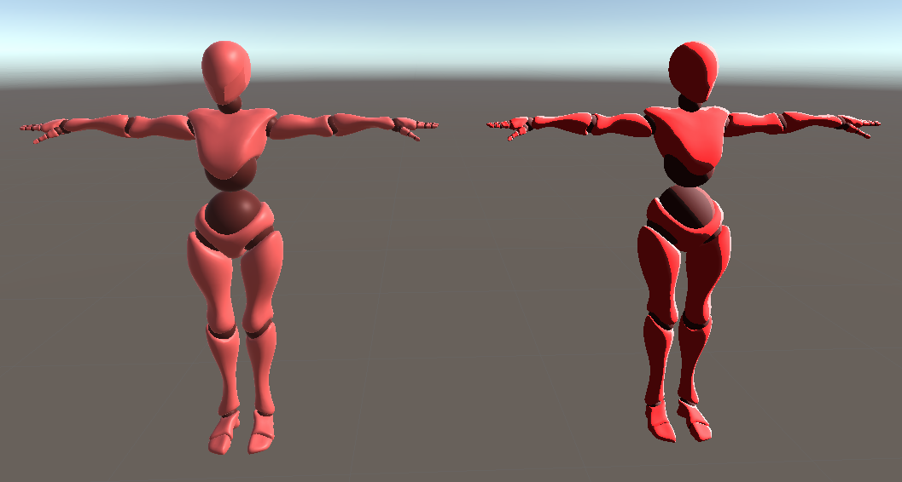
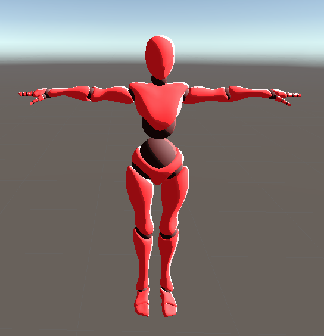
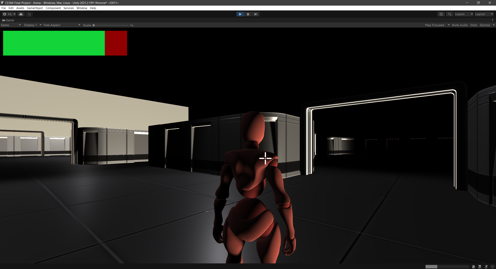

Though some of us have used Unity's 2D engine before, working in 3D has proven to be a new and difficult experience. Luckily, the Game Design and Development Decal at Berkeley offers an in-depth tutorial on creating a basic 3D game (link to their video tutorial, and link to the project's github repo), which we decided to use as our base project.
Our base project started with a box environment with four light sources and a controllable player in the form of a red mannequin, which was already rigged and had running and attacking animations. The player moved using the WASD keyboard keys and the camera could be moved left and right with the mouse. Ghost-like enemies spawn and advance towards the player to deal contact damage, but can be eliminated by shooting lasers from the player's fists using the mouse's left and right click. These shots use a form of raycasting to determine if a ghost collides with the fired laser.
First, we have implemented a cel shader by following a tutorial online (link):
|

|
The current cel shader supports rim lighting (the light-colored accents seen on the brighter edges of the model), achieved through Fresnel lighting. It also supports importing textures or using flat colors and the ability to modify the width and color of the cel shading ramp–where the shader calculates where to go from light to dark. We will be using this cel shader as a baseline to compare against other cel shading methods and parameters. We will also be exploring how these cel shaders look under different environments, of which we will build using assets found on the Unity Store.
|

|
We have also begun building an environment for the player to explore, also using free assets from the Unity Store:
|

|
The base game that we're building off of had rather crusty camera controls and movement feel, which we have also improved in this time. For example, before, our camera script could only rotate about the y-axis (move left and right), and tended to clip behind walls, obstructing our player from view. We solved this by creating a script that 1. records and stores the player's mouse movement to rotate the camera in all directions and 2. prevents the camera from clipping into walls by using raycasting to make sure the player is always in view by turning off walls' visibility if necessary.
Progress has been smooth so far, but due to the exam last week (which we may have forgotten about when designing our initial schedule) we are a little bit behind. However, progress has been fast when the team is able to work, so hopefully things will continue to go smoothly.
We will continue to play around with different parameters for our cel shader and also look into different techniques that we can incorporate to get different objects to look good. We will also work on finishing the construction of our current environment, as well as adding on more playable content for our game.